BPM and key finder for DJs
Drop your songs and get the tempo, the key and the Camelot code of each one, plus the keys it mixes with. It runs in your browser: no install, no account, your music never leaves your computer.
| Song | BPM | Key | Camelot | Mixes with | Confidence |
|---|
How to use it
Drop your songs
Drag files or a whole folder onto the box above, or tap Choose files on your phone.
Read BPM, key and Camelot
Each song gets its tempo, key (for example A minor), Camelot code (8A) and the three keys it blends with.
Plan the mix
Download the CSV, sort by Camelot, and mix neighbours on the Camelot wheel.
Big crate? Run it on your whole library
The same engine as a command-line tool. One command, nothing to install apart from Node.js.
Install Node.js once
Get the LTS version from nodejs.org (Windows, Mac or Linux).
Open a terminal
Mac: Terminal app. Windows: PowerShell. Linux: any terminal.
Paste this and press Enter
npx github:hablamusic/bpm-key-finder ~/Music --sort camelotReplace ~/Music with your folder (on Windows you can drag the folder into the window). Add --csv > crate.csv for a spreadsheet. MP3 needs ffmpeg; WAV works without it.

Tested on 19 AI-generated tracks
We compared the tool with essentia 2.1 (UPF Barcelona) on 19 Lyria tracks from HablaMusic: bachata, corridos, cumbia, dembow, latin trap and reggaeton.
What it means: AI music models follow the BPM you ask for, but not the key. Analyse AI tracks before you tag them. Raw data: benchmark/ai-tracks.json.
| BPM within 1 of essentia | 17 of 19 |
| Same key as essentia | 9 of 19 |
| Key mix-compatible with essentia's | 15 of 19 |
| BPM within 2 of the tempo in the prompt | 18 of 19 |
| Key equal to the key in the prompt | 1 of 19 (essentia: 0 of 19) |
Prefer a full web app?
The same detector runs on HablaMusic's online BPM and key finder, next to a mashup maker and a vocal remover.
FAQ
How do I find the BPM and key of a song?
Drop the song on this page. It measures the tempo from the drum hits and the key from the notes, and shows BPM, key, Camelot code and compatible keys in a few seconds. For a whole folder, run npx github:hablamusic/bpm-key-finder <folder>.
Is it free? Do I need an account?
Free, no account, no upload. The analysis runs in your browser (or on your computer with the CLI). The code is MIT licensed.
What is the Camelot code?
A number from 1 to 12 plus A (minor) or B (major). Songs with the same code, one number apart, or the same number with the other letter mix without clashing. See the Camelot wheel guide.
How accurate is it?
On 19 test tracks the BPM matched essentia within 1 BPM 17 times. The exact key matched 9 times and was mix-compatible 15 times; key detection is hard on dense club tracks, so check the confidence column.
Does it work on my phone?
Yes. Tap Choose files and pick songs from your phone; very long files take longer.